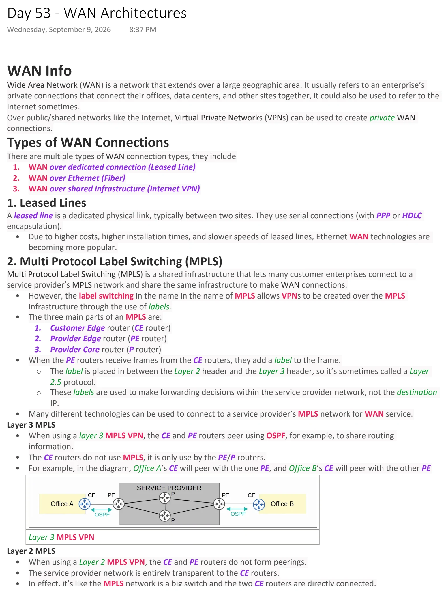
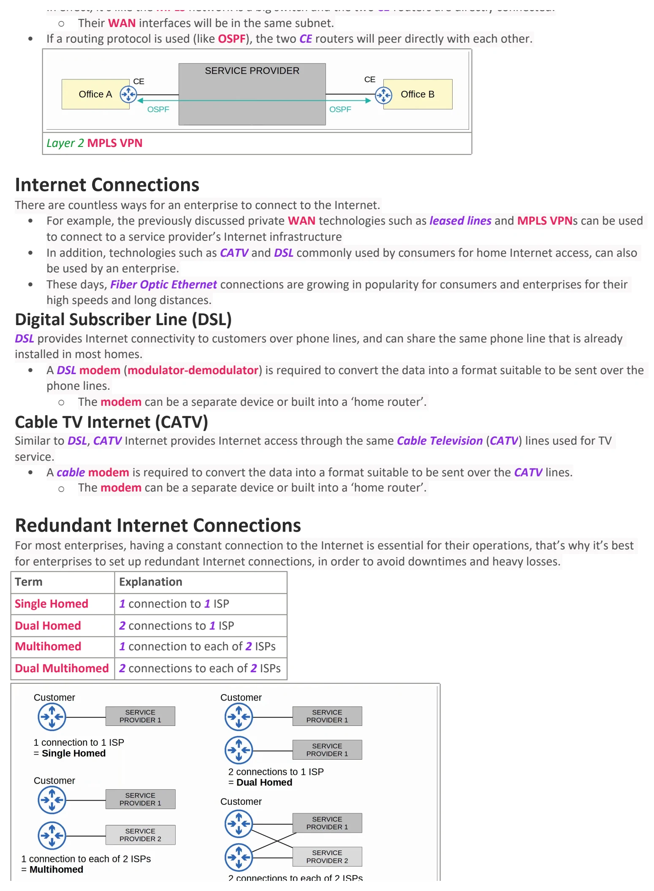
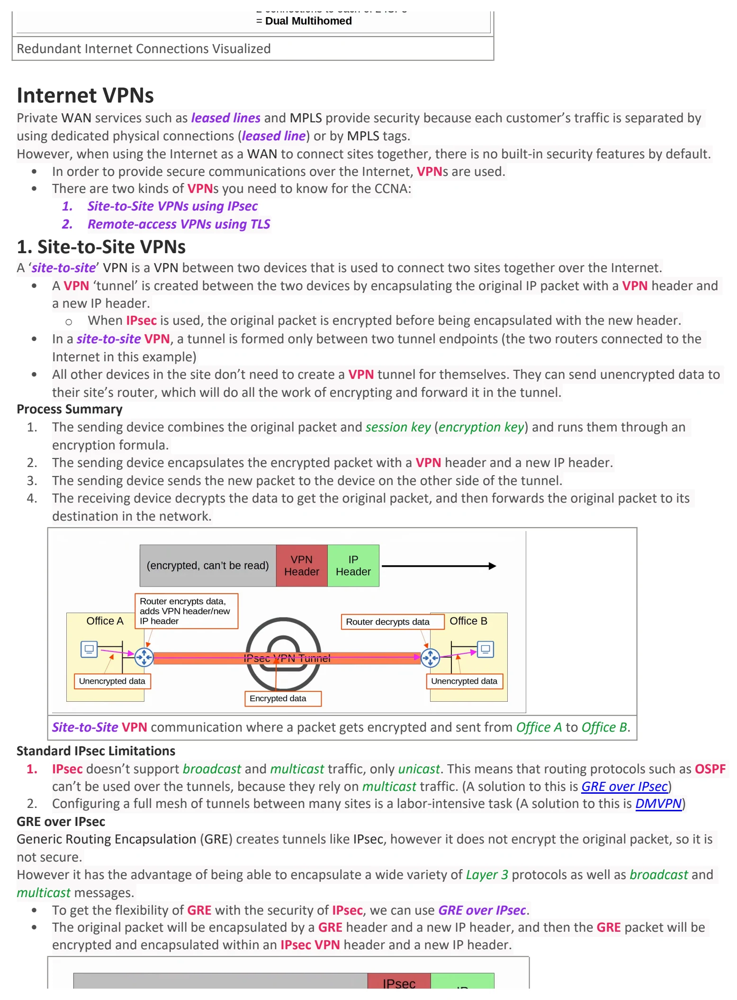
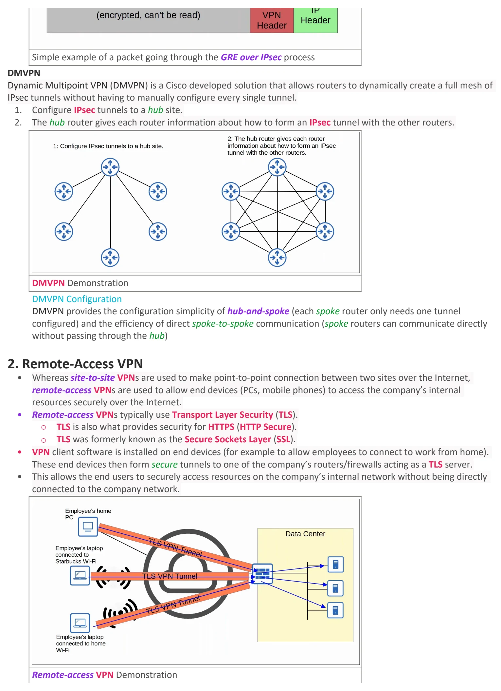
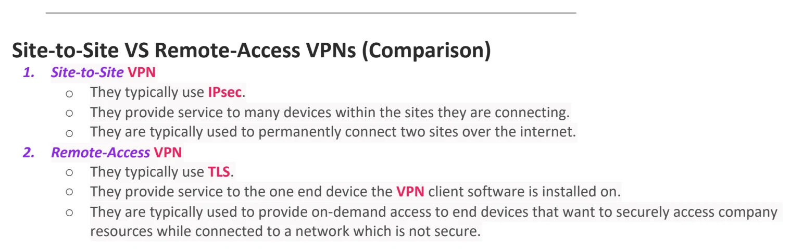

WAN Architectures
Download original PDF




Text view — WAN Architectures
Extracted from the original export. Diagrams and some formatting appear in the notes above.
Day 53 - WAN Architectures Wednesday, September 9, 2026 8:37 PM WAN Info Wide Area Network (WAN) is a network that extends over a large geographic area. It usually refers to an enterprise’s private connections that connect their offices, data centers, and other sites together, it could also be used to refer to the Internet sometimes. Over public/shared networks like the Internet, Virtual Private Networks (VPNs) can be used to create private WAN connections. Types of WAN Connections There are multiple types of WAN connection types, they include 1. WAN over dedicated connection (Leased Line) 2. WAN over Ethernet (Fiber) 3. WAN over shared infrastructure (Internet VPN) 1. Leased Lines A leased line is a dedicated physical link, typically between two sites. They use serial connections (with PPP or HDLC encapsulation). • Due to higher costs, higher installation times, and slower speeds of leased lines, Ethernet WAN technologies are becoming more popular. 2. Multi Protocol Label Switching (MPLS) Multi Protocol Label Switching (MPLS) is a shared infrastructure that lets many customer enterprises connect to a service provider’s MPLS network and share the same infrastructure to make WAN connections. • However, the label switching in the name in the name of MPLS allows VPNs to be created over the MPLS infrastructure through the use of labels. • The three main parts of an MPLS are: 1. Customer Edge router (CE router) 2. Provider Edge router (PE router) 3. Provider Core router (P router) • When the PE routers receive frames from the CE routers, they add a label to the frame. ○ The label is placed in between the Layer 2 header and the Layer 3 header, so it’s sometimes called a Layer 2.5 protocol. ○ These labels are used to make forwarding decisions within the service provider network, not the destination IP. • Many different technologies can be used to connect to a service provider’s MPLS network for WAN service. Layer 3 MPLS • When using a layer 3 MPLS VPN, the CE and PE routers peer using OSPF, for example, to share routing information. • The CE routers do not use MPLS, it is only use by the PE/P routers. • For example, in the diagram, Office A’s CE will peer with the one PE, and Office B’s CE will peer with the other PE Layer 3 MPLS VPN Layer 2 MPLS • When using a Layer 2 MPLS VPN, the CE and PE routers do not form peerings. • The service provider network is entirely transparent to the CE routers. • In effect, it’s like the MPLS network is a big switch and the two CE routers are directly connected. ○ Their WAN interfaces will be in the same subnet. • If a routing protocol is used (like OSPF), the two CE routers will peer directly with each other. Layer 2 MPLS VPN Internet Connections There are countless ways for an enterprise to connect to the Internet. • For example, the previously discussed private WAN technologies such as leased lines and MPLS VPNs can be used to connect to a service provider’s Internet infrastructure • In addition, technologies such as CATV and DSL commonly used by consumers for home Internet access, can also be used by an enterprise. • These days, Fiber Optic Ethernet connections are growing in popularity for consumers and enterprises for their high speeds and long distances. Digital Subscriber Line (DSL) DSL provides Internet connectivity to customers over phone lines, and can share the same phone line that is already installed in most homes. • A DSL modem (modulator-demodulator) is required to convert the data into a format suitable to be sent over the phone lines. ○ The modem can be a separate device or built into a ‘home router’. Cable TV Internet (CATV) Similar to DSL, CATV Internet provides Internet access through the same Cable Television (CATV) lines used for TV service. • A cable modem is required to convert the data into a format suitable to be sent over the CATV lines. ○ The modem can be a separate device or built into a ‘home router’. Redundant Internet Connections For most enterprises, having a constant connection to the Internet is essential for their operations, that’s why it’s best for enterprises to set up redundant Internet connections, in order to avoid downtimes and heavy losses. Term Explanation Single Homed 1 connection to 1 ISP Dual Homed 2 connections to 1 ISP Multihomed 1 connection to each of 2 ISPs Dual Multihomed 2 connections to each of 2 ISPs Redundant Internet Connections Visualized Internet VPNs Private WAN services such as leased lines and MPLS provide security because each customer’s traffic is separated by using dedicated physical connections (leased line) or by MPLS tags. However, when using the Internet as a WAN to connect sites together, there is no built-in security features by default. • In order to provide secure communications over the Internet, VPNs are used. • There are two kinds of VPNs you need to know for the CCNA: 1. Site-to-Site VPNs using IPsec 2. Remote-access VPNs using TLS 1. Site-to-Site VPNs A ‘site-to-site’ VPN is a VPN between two devices that is used to connect two sites together over the Internet. • A VPN ‘tunnel’ is created between the two devices by encapsulating the original IP packet with a VPN header and a new IP header. ○ When IPsec is used, the original packet is encrypted before being encapsulated with the new header. • In a site-to-site VPN, a tunnel is formed only between two tunnel endpoints (the two routers connected to the Internet in this example) • All other devices in the site don’t need to create a VPN tunnel for themselves. They can send unencrypted data to their site’s router, which will do all the work of encrypting and forward it in the tunnel. Process Summary 1. The sending device combines the original packet and session key (encryption key) and runs them through an encryption formula. 2. The sending device encapsulates the encrypted packet with a VPN header and a new IP header. 3. The sending device sends the new packet to the device on the other side of the tunnel. 4. The receiving device decrypts the data to get the original packet, and then forwards the original packet to its destination in the network. Site-to-Site VPN communication where a packet gets encrypted and sent from Office A to Office B. Standard IPsec Limitations 1. IPsec doesn’t support broadcast and multicast traffic, only unicast. This means that routing protocols such as OSPF can’t be used over the tunnels, because they rely on multicast traffic. (A solution to this is GRE over IPsec) 2. Configuring a full mesh of tunnels between many sites is a labor-intensive task (A solution to this is DMVPN) GRE over IPsec Generic Routing Encapsulation (GRE) creates tunnels like IPsec, however it does not encrypt the original packet, so it is not secure. However it has the advantage of being able to encapsulate a wide variety of Layer 3 protocols as well as broadcast and multicast messages. • To get the flexibility of GRE with the security of IPsec, we can use GRE over IPsec. • The original packet will be encapsulated by a GRE header and a new IP header, and then the GRE packet will be encrypted and encapsulated within an IPsec VPN header and a new IP header. Simple example of a packet going through the GRE over IPsec process DMVPN Dynamic Multipoint VPN (DMVPN) is a Cisco developed solution that allows routers to dynamically create a full mesh of IPsec tunnels without having to manually configure every single tunnel. 1. Configure IPsec tunnels to a hub site. 2. The hub router gives each router information about how to form an IPsec tunnel with the other routers. DMVPN Demonstration DMVPN Configuration DMVPN provides the configuration simplicity of hub-and-spoke (each spoke router only needs one tunnel configured) and the efficiency of direct spoke-to-spoke communication (spoke routers can communicate directly without passing through the hub) 2. Remote-Access VPN • Whereas site-to-site VPNs are used to make point-to-point connection between two sites over the Internet, remote-access VPNs are used to allow end devices (PCs, mobile phones) to access the company’s internal resources securely over the Internet. • Remote-access VPNs typically use Transport Layer Security (TLS). ○ TLS is also what provides security for HTTPS (HTTP Secure). ○ TLS was formerly known as the Secure Sockets Layer (SSL). • VPN client software is installed on end devices (for example to allow employees to connect to work from home). These end devices then form secure tunnels to one of the company’s routers/firewalls acting as a TLS server. • This allows the end users to securely access resources on the company’s internal network without being directly connected to the company network. Remote-access VPN Demonstration Site-to-Site VS Remote-Access VPNs (Comparison) 1. Site-to-Site VPN ○ They typically use IPsec. ○ They provide service to many devices within the sites they are connecting. ○ They are typically used to permanently connect two sites over the internet. 2. Remote-Access VPN ○ They typically use TLS. ○ They provide service to the one end device the VPN client software is installed on. ○ They are typically used to provide on-demand access to end devices that want to securely access company resources while connected to a network which is not secure. Day 53 - WAN Architectures Wednesday, September 9, 2026 8:37 PM WAN Info Wide Area Network (WAN) is a network that extends over a large geographic area. It usually refers to an enterprise’s private connections that connect their offices, data centers, and other sites together, it could also be used to refer to the Internet sometimes. Over public/shared networks like the Internet, Virtual Private Networks (VPNs) can be used to create private WAN connections. Types of WAN Connections There are multiple types of WAN connection types, they include 1. WAN over dedicated connection (Leased Line) 2. WAN over Ethernet (Fiber) 3. WAN over shared infrastructure (Internet VPN) 1. Leased Lines A leased line is a dedicated physical link, typically between two sites. They use serial connections (with PPP or HDLC encapsulation). • Due to higher costs, higher installation times, and slower speeds of leased lines, Ethernet WAN technologies are becoming more popular. 2. Multi Protocol Label Switching (MPLS) Multi Protocol Label Switching (MPLS) is a shared infrastructure that lets many customer enterprises connect to a service provider’s MPLS network and share the same infrastructure to make WAN connections. • However, the label switching in the name in the name of MPLS allows VPNs to be created over the MPLS infrastructure through the use of labels. • The three main parts of an MPLS are: 1. Customer Edge router (CE router) 2. Provider Edge router (PE router) 3. Provider Core router (P router) • When the PE routers receive frames from the CE routers, they add a label to the frame. ○ The label is placed in between the Layer 2 header and the Layer 3 header, so it’s sometimes called a Layer 2.5 protocol. ○ These labels are used to make forwarding decisions within the service provider network, not the destination IP. • Many different technologies can be used to connect to a service provider’s MPLS network for WAN service. Layer 3 MPLS • When using a layer 3 MPLS VPN, the CE and PE routers peer using OSPF, for example, to share routing information. • The CE routers do not use MPLS, it is only use by the PE/P routers. • For example, in the diagram, Office A’s CE will peer with the one PE, and Office B’s CE will peer with the other PE Layer 3 MPLS VPN Layer 2 MPLS • When using a Layer 2 MPLS VPN, the CE and PE routers do not form peerings. • The service provider network is entirely transparent to the CE routers. • In effect, it’s like the MPLS network is a big switch and the two CE routers are directly connected. ○ Their WAN interfaces will be in the same subnet. • If a routing protocol is used (like OSPF), the two CE routers will peer directly with each other. Layer 2 MPLS VPN Internet Connections There are countless ways for an enterprise to connect to the Internet. • For example, the previously discussed private WAN technologies such as leased lines and MPLS VPNs can be used to connect to a service provider’s Internet infrastructure • In addition, technologies such as CATV and DSL commonly used by consumers for home Internet access, can also be used by an enterprise. • These days, Fiber Optic Ethernet connections are growing in popularity for consumers and enterprises for their high speeds and long distances. Digital Subscriber Line (DSL) DSL provides Internet connectivity to customers over phone lines, and can share the same phone line that is already installed in most homes. • A DSL modem (modulator-demodulator) is required to convert the data into a format suitable to be sent over the phone lines. ○ The modem can be a separate device or built into a ‘home router’. Cable TV Internet (CATV) Similar to DSL, CATV Internet provides Internet access through the same Cable Television (CATV) lines used for TV service. • A cable modem is required to convert the data into a format suitable to be sent over the CATV lines. ○ The modem can be a separate device or built into a ‘home router’. Redundant Internet Connections For most enterprises, having a constant connection to the Internet is essential for their operations, that’s why it’s best for enterprises to set up redundant Internet connections, in order to avoid downtimes and heavy losses. Term Explanation Single Homed 1 connection to 1 ISP Dual Homed 2 connections to 1 ISP Multihomed 1 connection to each of 2 ISPs Dual Multihomed 2 connections to each of 2 ISPs Redundant Internet Connections Visualized Internet VPNs Private WAN services such as leased lines and MPLS provide security because each customer’s traffic is separated by using dedicated physical connections (leased line) or by MPLS tags. However, when using the Internet as a WAN to connect sites together, there is no built-in security features by default. • In order to provide secure communications over the Internet, VPNs are used. • There are two kinds of VPNs you need to know for the CCNA: 1. Site-to-Site VPNs using IPsec 2. Remote-access VPNs using TLS 1. Site-to-Site VPNs A ‘site-to-site’ VPN is a VPN between two devices that is used to connect two sites together over the Internet. • A VPN ‘tunnel’ is created between the two devices by encapsulating the original IP packet with a VPN header and a new IP header. ○ When IPsec is used, the original packet is encrypted before being encapsulated with the new header. • In a site-to-site VPN, a tunnel is formed only between two tunnel endpoints (the two routers connected to the Internet in this example) • All other devices in the site don’t need to create a VPN tunnel for themselves. They can send unencrypted data to their site’s router, which will do all the work of encrypting and forward it in the tunnel. Process Summary 1. The sending device combines the original packet and session key (encryption key) and runs them through an encryption formula. 2. The sending device encapsulates the encrypted packet with a VPN header and a new IP header. 3. The sending device sends the new packet to the device on the other side of the tunnel. 4. The receiving device decrypts the data to get the original packet, and then forwards the original packet to its destination in the network. Site-to-Site VPN communication where a packet gets encrypted and sent from Office A to Office B. Standard IPsec Limitations 1. IPsec doesn’t support broadcast and multicast traffic, only unicast. This means that routing protocols such as OSPF can’t be used over the tunnels, because they rely on multicast traffic. (A solution to this is GRE over IPsec) 2. Configuring a full mesh of tunnels between many sites is a labor-intensive task (A solution to this is DMVPN) GRE over IPsec Generic Routing Encapsulation (GRE) creates tunnels like IPsec, however it does not encrypt the original packet, so it is not secure. However it has the advantage of being able to encapsulate a wide variety of Layer 3 protocols as well as broadcast and multicast messages. • To get the flexibility of GRE with the security of IPsec, we can use GRE over IPsec. • The original packet will be encapsulated by a GRE header and a new IP header, and then the GRE packet will be encrypted and encapsulated within an IPsec VPN header and a new IP header. Simple example of a packet going through the GRE over IPsec process DMVPN Dynamic Multipoint VPN (DMVPN) is a Cisco developed solution that allows routers to dynamically create a full mesh of IPsec tunnels without having to manually configure every single tunnel. 1. Configure IPsec tunnels to a hub site. 2. The hub router gives each router information about how to form an IPsec tunnel with the other routers. DMVPN Demonstration DMVPN Configuration DMVPN provides the configuration simplicity of hub-and-spoke (each spoke router only needs one tunnel configured) and the efficiency of direct spoke-to-spoke communication (spoke routers can communicate directly without passing through the hub) 2. Remote-Access VPN • Whereas site-to-site VPNs are used to make point-to-point connection between two sites over the Internet, remote-access VPNs are used to allow end devices (PCs, mobile phones) to access the company’s internal resources securely over the Internet. • Remote-access VPNs typically use Transport Layer Security (TLS). ○ TLS is also what provides security for HTTPS (HTTP Secure). ○ TLS was formerly known as the Secure Sockets Layer (SSL). • VPN client software is installed on end devices (for example to allow employees to connect to work from home). These end devices then form secure tunnels to one of the company’s routers/firewalls acting as a TLS server. • This allows the end users to securely access resources on the company’s internal network without being directly connected to the company network. Remote-access VPN Demonstration Site-to-Site VS Remote-Access VPNs (Comparison) 1. Site-to-Site VPN ○ They typically use IPsec. ○ They provide service to many devices within the sites they are connecting. ○ They are typically used to permanently connect two sites over the internet. 2. Remote-Access VPN ○ They typically use TLS. ○ They provide service to the one end device the VPN client software is installed on. ○ They are typically used to provide on-demand access to end devices that want to securely access company resources while connected to a network which is not secure. Day 53 - WAN Architectures Wednesday, September 9, 2026 8:37 PM WAN Info Wide Area Network (WAN) is a network that extends over a large geographic area. It usually refers to an enterprise’s private connections that connect their offices, data centers, and other sites together, it could also be used to refer to the Internet sometimes. Over public/shared networks like the Internet, Virtual Private Networks (VPNs) can be used to create private WAN connections. Types of WAN Connections There are multiple types of WAN connection types, they include 1. WAN over dedicated connection (Leased Line) 2. WAN over Ethernet (Fiber) 3. WAN over shared infrastructure (Internet VPN) 1. Leased Lines A leased line is a dedicated physical link, typically between two sites. They use serial connections (with PPP or HDLC encapsulation). • Due to higher costs, higher installation times, and slower speeds of leased lines, Ethernet WAN technologies are becoming more popular. 2. Multi Protocol Label Switching (MPLS) Multi Protocol Label Switching (MPLS) is a shared infrastructure that lets many customer enterprises connect to a service provider’s MPLS network and share the same infrastructure to make WAN connections. • However, the label switching in the name in the name of MPLS allows VPNs to be created over the MPLS infrastructure through the use of labels. • The three main parts of an MPLS are: 1. Customer Edge router (CE router) 2. Provider Edge router (PE router) 3. Provider Core router (P router) • When the PE routers receive frames from the CE routers, they add a label to the frame. ○ The label is placed in between the Layer 2 header and the Layer 3 header, so it’s sometimes called a Layer 2.5 protocol. ○ These labels are used to make forwarding decisions within the service provider network, not the destination IP. • Many different technologies can be used to connect to a service provider’s MPLS network for WAN service. Layer 3 MPLS • When using a layer 3 MPLS VPN, the CE and PE routers peer using OSPF, for example, to share routing information. • The CE routers do not use MPLS, it is only use by the PE/P routers. • For example, in the diagram, Office A’s CE will peer with the one PE, and Office B’s CE will peer with the other PE Layer 3 MPLS VPN Layer 2 MPLS • When using a Layer 2 MPLS VPN, the CE and PE routers do not form peerings. • The service provider network is entirely transparent to the CE routers. • In effect, it’s like the MPLS network is a big switch and the two CE routers are directly connected. ○ Their WAN interfaces will be in the same subnet. • If a routing protocol is used (like OSPF), the two CE routers will peer directly with each other. Layer 2 MPLS VPN Internet Connections There are countless ways for an enterprise to connect to the Internet. • For example, the previously discussed private WAN technologies such as leased lines and MPLS VPNs can be used to connect to a service provider’s Internet infrastructure • In addition, technologies such as CATV and DSL commonly used by consumers for home Internet access, can also be used by an enterprise. • These days, Fiber Optic Ethernet connections are growing in popularity for consumers and enterprises for their high speeds and long distances. Digital Subscriber Line (DSL) DSL provides Internet connectivity to customers over phone lines, and can share the same phone line that is already installed in most homes. • A DSL modem (modulator-demodulator) is required to convert the data into a format suitable to be sent over the phone lines. ○ The modem can be a separate device or built into a ‘home router’. Cable TV Internet (CATV) Similar to DSL, CATV Internet provides Internet access through the same Cable Television (CATV) lines used for TV service. • A cable modem is required to convert the data into a format suitable to be sent over the CATV lines. ○ The modem can be a separate device or built into a ‘home router’. Redundant Internet Connections For most enterprises, having a constant connection to the Internet is essential for their operations, that’s why it’s best for enterprises to set up redundant Internet connections, in order to avoid downtimes and heavy losses. Term Explanation Single Homed 1 connection to 1 ISP Dual Homed 2 connections to 1 ISP Multihomed 1 connection to each of 2 ISPs Dual Multihomed 2 connections to each of 2 ISPs Redundant Internet Connections Visualized Internet VPNs Private WAN services such as leased lines and MPLS provide security because each customer’s traffic is separated by using dedicated physical connections (leased line) or by MPLS tags. However, when using the Internet as a WAN to connect sites together, there is no built-in security features by default. • In order to provide secure communications over the Internet, VPNs are used. • There are two kinds of VPNs you need to know for the CCNA: 1. Site-to-Site VPNs using IPsec 2. Remote-access VPNs using TLS 1. Site-to-Site VPNs A ‘site-to-site’ VPN is a VPN between two devices that is used to connect two sites together over the Internet. • A VPN ‘tunnel’ is created between the two devices by encapsulating the original IP packet with a VPN header and a new IP header. ○ When IPsec is used, the original packet is encrypted before being encapsulated with the new header. • In a site-to-site VPN, a tunnel is formed only between two tunnel endpoints (the two routers connected to the Internet in this example) • All other devices in the site don’t need to create a VPN tunnel for themselves. They can send unencrypted data to their site’s router, which will do all the work of encrypting and forward it in the tunnel. Process Summary 1. The sending device combines the original packet and session key (encryption key) and runs them through an encryption formula. 2. The sending device encapsulates the encrypted packet with a VPN header and a new IP header. 3. The sending device sends the new packet to the device on the other side of the tunnel. 4. The receiving device decrypts the data to get the original packet, and then forwards the original packet to its destination in the network. Site-to-Site VPN communication where a packet gets encrypted and sent from Office A to Office B. Standard IPsec Limitations 1. IPsec doesn’t support broadcast and multicast traffic, only unicast. This means that routing protocols such as OSPF can’t be used over the tunnels, because they rely on multicast traffic. (A solution to this is GRE over IPsec) 2. Configuring a full mesh of tunnels between many sites is a labor-intensive task (A solution to this is DMVPN) GRE over IPsec Generic Routing Encapsulation (GRE) creates tunnels like IPsec, however it does not encrypt the original packet, so it is not secure. However it has the advantage of being able to encapsulate a wide variety of Layer 3 protocols as well as broadcast and multicast messages. • To get the flexibility of GRE with the security of IPsec, we can use GRE over IPsec. • The original packet will be encapsulated by a GRE header and a new IP header, and then the GRE packet will be encrypted and encapsulated within an IPsec VPN header and a new IP header. Simple example of a packet going through the GRE over IPsec process DMVPN Dynamic Multipoint VPN (DMVPN) is a Cisco developed solution that allows routers to dynamically create a full mesh of IPsec tunnels without having to manually configure every single tunnel. 1. Configure IPsec tunnels to a hub site. 2. The hub router gives each router information about how to form an IPsec tunnel with the other routers. DMVPN Demonstration DMVPN Configuration DMVPN provides the configuration simplicity of hub-and-spoke (each spoke router only needs one tunnel configured) and the efficiency of direct spoke-to-spoke communication (spoke routers can communicate directly without passing through the hub) 2. Remote-Access VPN • Whereas site-to-site VPNs are used to make point-to-point connection between two sites over the Internet, remote-access VPNs are used to allow end devices (PCs, mobile phones) to access the company’s internal resources securely over the Internet. • Remote-access VPNs typically use Transport Layer Security (TLS). ○ TLS is also what provides security for HTTPS (HTTP Secure). ○ TLS was formerly known as the Secure Sockets Layer (SSL). • VPN client software is installed on end devices (for example to allow employees to connect to work from home). These end devices then form secure tunnels to one of the company’s routers/firewalls acting as a TLS server. • This allows the end users to securely access resources on the company’s internal network without being directly connected to the company network. Remote-access VPN Demonstration Site-to-Site VS Remote-Access VPNs (Comparison) 1. Site-to-Site VPN ○ They typically use IPsec. ○ They provide service to many devices within the sites they are connecting. ○ They are typically used to permanently connect two sites over the internet. 2. Remote-Access VPN ○ They typically use TLS. ○ They provide service to the one end device the VPN client software is installed on. ○ They are typically used to provide on-demand access to end devices that want to securely access company resources while connected to a network which is not secure. Day 53 - WAN Architectures Wednesday, September 9, 2026 8:37 PM WAN Info Wide Area Network (WAN) is a network that extends over a large geographic area. It usually refers to an enterprise’s private connections that connect their offices, data centers, and other sites together, it could also be used to refer to the Internet sometimes. Over public/shared networks like the Internet, Virtual Private Networks (VPNs) can be used to create private WAN connections. Types of WAN Connections There are multiple types of WAN connection types, they include 1. WAN over dedicated connection (Leased Line) 2. WAN over Ethernet (Fiber) 3. WAN over shared infrastructure (Internet VPN) 1. Leased Lines A leased line is a dedicated physical link, typically between two sites. They use serial connections (with PPP or HDLC encapsulation). • Due to higher costs, higher installation times, and slower speeds of leased lines, Ethernet WAN technologies are becoming more popular. 2. Multi Protocol Label Switching (MPLS) Multi Protocol Label Switching (MPLS) is a shared infrastructure that lets many customer enterprises connect to a service provider’s MPLS network and share the same infrastructure to make WAN connections. • However, the label switching in the name in the name of MPLS allows VPNs to be created over the MPLS infrastructure through the use of labels. • The three main parts of an MPLS are: 1. Customer Edge router (CE router) 2. Provider Edge router (PE router) 3. Provider Core router (P router) • When the PE routers receive frames from the CE routers, they add a label to the frame. ○ The label is placed in between the Layer 2 header and the Layer 3 header, so it’s sometimes called a Layer 2.5 protocol. ○ These labels are used to make forwarding decisions within the service provider network, not the destination IP. • Many different technologies can be used to connect to a service provider’s MPLS network for WAN service. Layer 3 MPLS • When using a layer 3 MPLS VPN, the CE and PE routers peer using OSPF, for example, to share routing information. • The CE routers do not use MPLS, it is only use by the PE/P routers. • For example, in the diagram, Office A’s CE will peer with the one PE, and Office B’s CE will peer with the other PE Layer 3 MPLS VPN Layer 2 MPLS • When using a Layer 2 MPLS VPN, the CE and PE routers do not form peerings. • The service provider network is entirely transparent to the CE routers. • In effect, it’s like the MPLS network is a big switch and the two CE routers are directly connected. ○ Their WAN interfaces will be in the same subnet. • If a routing protocol is used (like OSPF), the two CE routers will peer directly with each other. Layer 2 MPLS VPN Internet Connections There are countless ways for an enterprise to connect to the Internet. • For example, the previously discussed private WAN technologies such as leased lines and MPLS VPNs can be used to connect to a service provider’s Internet infrastructure • In addition, technologies such as CATV and DSL commonly used by consumers for home Internet access, can also be used by an enterprise. • These days, Fiber Optic Ethernet connections are growing in popularity for consumers and enterprises for their high speeds and long distances. Digital Subscriber Line (DSL) DSL provides Internet connectivity to customers over phone lines, and can share the same phone line that is already installed in most homes. • A DSL modem (modulator-demodulator) is required to convert the data into a format suitable to be sent over the phone lines. ○ The modem can be a separate device or built into a ‘home router’. Cable TV Internet (CATV) Similar to DSL, CATV Internet provides Internet access through the same Cable Television (CATV) lines used for TV service. • A cable modem is required to convert the data into a format suitable to be sent over the CATV lines. ○ The modem can be a separate device or built into a ‘home router’. Redundant Internet Connections For most enterprises, having a constant connection to the Internet is essential for their operations, that’s why it’s best for enterprises to set up redundant Internet connections, in order to avoid downtimes and heavy losses. Term Explanation Single Homed 1 connection to 1 ISP Dual Homed 2 connections to 1 ISP Multihomed 1 connection to each of 2 ISPs Dual Multihomed 2 connections to each of 2 ISPs Redundant Internet Connections Visualized Internet VPNs Private WAN services such as leased lines and MPLS provide security because each customer’s traffic is separated by using dedicated physical connections (leased line) or by MPLS tags. However, when using the Internet as a WAN to connect sites together, there is no built-in security features by default. • In order to provide secure communications over the Internet, VPNs are used. • There are two kinds of VPNs you need to know for the CCNA: 1. Site-to-Site VPNs using IPsec 2. Remote-access VPNs using TLS 1. Site-to-Site VPNs A ‘site-to-site’ VPN is a VPN between two devices that is used to connect two sites together over the Internet. • A VPN ‘tunnel’ is created between the two devices by encapsulating the original IP packet with a VPN header and a new IP header. ○ When IPsec is used, the original packet is encrypted before being encapsulated with the new header. • In a site-to-site VPN, a tunnel is formed only between two tunnel endpoints (the two routers connected to the Internet in this example) • All other devices in the site don’t need to create a VPN tunnel for themselves. They can send unencrypted data to their site’s router, which will do all the work of encrypting and forward it in the tunnel. Process Summary 1. The sending device combines the original packet and session key (encryption key) and runs them through an encryption formula. 2. The sending device encapsulates the encrypted packet with a VPN header and a new IP header. 3. The sending device sends the new packet to the device on the other side of the tunnel. 4. The receiving device decrypts the data to get the original packet, and then forwards the original packet to its destination in the network. Site-to-Site VPN communication where a packet gets encrypted and sent from Office A to Office B. Standard IPsec Limitations 1. IPsec doesn’t support broadcast and multicast traffic, only unicast. This means that routing protocols such as OSPF can’t be used over the tunnels, because they rely on multicast traffic. (A solution to this is GRE over IPsec) 2. Configuring a full mesh of tunnels between many sites is a labor-intensive task (A solution to this is DMVPN) GRE over IPsec Generic Routing Encapsulation (GRE) creates tunnels like IPsec, however it does not encrypt the original packet, so it is not secure. However it has the advantage of being able to encapsulate a wide variety of Layer 3 protocols as well as broadcast and multicast messages. • To get the flexibility of GRE with the security of IPsec, we can use GRE over IPsec. • The original packet will be encapsulated by a GRE header and a new IP header, and then the GRE packet will be encrypted and encapsulated within an IPsec VPN header and a new IP header. Simple example of a packet going through the GRE over IPsec process DMVPN Dynamic Multipoint VPN (DMVPN) is a Cisco developed solution that allows routers to dynamically create a full mesh of IPsec tunnels without having to manually configure every single tunnel. 1. Configure IPsec tunnels to a hub site. 2. The hub router gives each router information about how to form an IPsec tunnel with the other routers. DMVPN Demonstration DMVPN Configuration DMVPN provides the configuration simplicity of hub-and-spoke (each spoke router only needs one tunnel configured) and the efficiency of direct spoke-to-spoke communication (spoke routers can communicate directly without passing through the hub) 2. Remote-Access VPN • Whereas site-to-site VPNs are used to make point-to-point connection between two sites over the Internet, remote-access VPNs are used to allow end devices (PCs, mobile phones) to access the company’s internal resources securely over the Internet. • Remote-access VPNs typically use Transport Layer Security (TLS). ○ TLS is also what provides security for HTTPS (HTTP Secure). ○ TLS was formerly known as the Secure Sockets Layer (SSL). • VPN client software is installed on end devices (for example to allow employees to connect to work from home). These end devices then form secure tunnels to one of the company’s routers/firewalls acting as a TLS server. • This allows the end users to securely access resources on the company’s internal network without being directly connected to the company network. Remote-access VPN Demonstration Site-to-Site VS Remote-Access VPNs (Comparison) 1. Site-to-Site VPN ○ They typically use IPsec. ○ They provide service to many devices within the sites they are connecting. ○ They are typically used to permanently connect two sites over the internet. 2. Remote-Access VPN ○ They typically use TLS. ○ They provide service to the one end device the VPN client software is installed on. ○ They are typically used to provide on-demand access to end devices that want to securely access company resources while connected to a network which is not secure. Day 53 - WAN Architectures Wednesday, September 9, 2026 8:37 PM WAN Info Wide Area Network (WAN) is a network that extends over a large geographic area. It usually refers to an enterprise’s private connections that connect their offices, data centers, and other sites together, it could also be used to refer to the Internet sometimes. Over public/shared networks like the Internet, Virtual Private Networks (VPNs) can be used to create private WAN connections. Types of WAN Connections There are multiple types of WAN connection types, they include 1. WAN over dedicated connection (Leased Line) 2. WAN over Ethernet (Fiber) 3. WAN over shared infrastructure (Internet VPN) 1. Leased Lines A leased line is a dedicated physical link, typically between two sites. They use serial connections (with PPP or HDLC encapsulation). • Due to higher costs, higher installation times, and slower speeds of leased lines, Ethernet WAN technologies are becoming more popular. 2. Multi Protocol Label Switching (MPLS) Multi Protocol Label Switching (MPLS) is a shared infrastructure that lets many customer enterprises connect to a service provider’s MPLS network and share the same infrastructure to make WAN connections. • However, the label switching in the name in the name of MPLS allows VPNs to be created over the MPLS infrastructure through the use of labels. • The three main parts of an MPLS are: 1. Customer Edge router (CE router) 2. Provider Edge router (PE router) 3. Provider Core router (P router) • When the PE routers receive frames from the CE routers, they add a label to the frame. ○ The label is placed in between the Layer 2 header and the Layer 3 header, so it’s sometimes called a Layer 2.5 protocol. ○ These labels are used to make forwarding decisions within the service provider network, not the destination IP. • Many different technologies can be used to connect to a service provider’s MPLS network for WAN service. Layer 3 MPLS • When using a layer 3 MPLS VPN, the CE and PE routers peer using OSPF, for example, to share routing information. • The CE routers do not use MPLS, it is only use by the PE/P routers. • For example, in the diagram, Office A’s CE will peer with the one PE, and Office B’s CE will peer with the other PE Layer 3 MPLS VPN Layer 2 MPLS • When using a Layer 2 MPLS VPN, the CE and PE routers do not form peerings. • The service provider network is entirely transparent to the CE routers. • In effect, it’s like the MPLS network is a big switch and the two CE routers are directly connected. ○ Their WAN interfaces will be in the same subnet. • If a routing protocol is used (like OSPF), the two CE routers will peer directly with each other. Layer 2 MPLS VPN Internet Connections There are countless ways for an enterprise to connect to the Internet. • For example, the previously discussed private WAN technologies such as leased lines and MPLS VPNs can be used to connect to a service provider’s Internet infrastructure • In addition, technologies such as CATV and DSL commonly used by consumers for home Internet access, can also be used by an enterprise. • These days, Fiber Optic Ethernet connections are growing in popularity for consumers and enterprises for their high speeds and long distances. Digital Subscriber Line (DSL) DSL provides Internet connectivity to customers over phone lines, and can share the same phone line that is already installed in most homes. • A DSL modem (modulator-demodulator) is required to convert the data into a format suitable to be sent over the phone lines. ○ The modem can be a separate device or built into a ‘home router’. Cable TV Internet (CATV) Similar to DSL, CATV Internet provides Internet access through the same Cable Television (CATV) lines used for TV service. • A cable modem is required to convert the data into a format suitable to be sent over the CATV lines. ○ The modem can be a separate device or built into a ‘home router’. Redundant Internet Connections For most enterprises, having a constant connection to the Internet is essential for their operations, that’s why it’s best for enterprises to set up redundant Internet connections, in order to avoid downtimes and heavy losses. Term Explanation Single Homed 1 connection to 1 ISP Dual Homed 2 connections to 1 ISP Multihomed 1 connection to each of 2 ISPs Dual Multihomed 2 connections to each of 2 ISPs Redundant Internet Connections Visualized Internet VPNs Private WAN services such as leased lines and MPLS provide security because each customer’s traffic is separated by using dedicated physical connections (leased line) or by MPLS tags. However, when using the Internet as a WAN to connect sites together, there is no built-in security features by default. • In order to provide secure communications over the Internet, VPNs are used. • There are two kinds of VPNs you need to know for the CCNA: 1. Site-to-Site VPNs using IPsec 2. Remote-access VPNs using TLS 1. Site-to-Site VPNs A ‘site-to-site’ VPN is a VPN between two devices that is used to connect two sites together over the Internet. • A VPN ‘tunnel’ is created between the two devices by encapsulating the original IP packet with a VPN header and a new IP header. ○ When IPsec is used, the original packet is encrypted before being encapsulated with the new header. • In a site-to-site VPN, a tunnel is formed only between two tunnel endpoints (the two routers connected to the Internet in this example) • All other devices in the site don’t need to create a VPN tunnel for themselves. They can send unencrypted data to their site’s router, which will do all the work of encrypting and forward it in the tunnel. Process Summary 1. The sending device combines the original packet and session key (encryption key) and runs them through an encryption formula. 2. The sending device encapsulates the encrypted packet with a VPN header and a new IP header. 3. The sending device sends the new packet to the device on the other side of the tunnel. 4. The receiving device decrypts the data to get the original packet, and then forwards the original packet to its destination in the network. Site-to-Site VPN communication where a packet gets encrypted and sent from Office A to Office B. Standard IPsec Limitations 1. IPsec doesn’t support broadcast and multicast traffic, only unicast. This means that routing protocols such as OSPF can’t be used over the tunnels, because they rely on multicast traffic. (A solution to this is GRE over IPsec) 2. Configuring a full mesh of tunnels between many sites is a labor-intensive task (A solution to this is DMVPN) GRE over IPsec Generic Routing Encapsulation (GRE) creates tunnels like IPsec, however it does not encrypt the original packet, so it is not secure. However it has the advantage of being able to encapsulate a wide variety of Layer 3 protocols as well as broadcast and multicast messages. • To get the flexibility of GRE with the security of IPsec, we can use GRE over IPsec. • The original packet will be encapsulated by a GRE header and a new IP header, and then the GRE packet will be encrypted and encapsulated within an IPsec VPN header and a new IP header. Simple example of a packet going through the GRE over IPsec process DMVPN Dynamic Multipoint VPN (DMVPN) is a Cisco developed solution that allows routers to dynamically create a full mesh of IPsec tunnels without having to manually configure every single tunnel. 1. Configure IPsec tunnels to a hub site. 2. The hub router gives each router information about how to form an IPsec tunnel with the other routers. DMVPN Demonstration DMVPN Configuration DMVPN provides the configuration simplicity of hub-and-spoke (each spoke router only needs one tunnel configured) and the efficiency of direct spoke-to-spoke communication (spoke routers can communicate directly without passing through the hub) 2. Remote-Access VPN • Whereas site-to-site VPNs are used to make point-to-point connection between two sites over the Internet, remote-access VPNs are used to allow end devices (PCs, mobile phones) to access the company’s internal resources securely over the Internet. • Remote-access VPNs typically use Transport Layer Security (TLS). ○ TLS is also what provides security for HTTPS (HTTP Secure). ○ TLS was formerly known as the Secure Sockets Layer (SSL). • VPN client software is installed on end devices (for example to allow employees to connect to work from home). These end devices then form secure tunnels to one of the company’s routers/firewalls acting as a TLS server. • This allows the end users to securely access resources on the company’s internal network without being directly connected to the company network. Remote-access VPN Demonstration Site-to-Site VS Remote-Access VPNs (Comparison) 1. Site-to-Site VPN ○ They typically use IPsec. ○ They provide service to many devices within the sites they are connecting. ○ They are typically used to permanently connect two sites over the internet. 2. Remote-Access VPN ○ They typically use TLS. ○ They provide service to the one end device the VPN client software is installed on. ○ They are typically used to provide on-demand access to end devices that want to securely access company resources while connected to a network which is not secure.